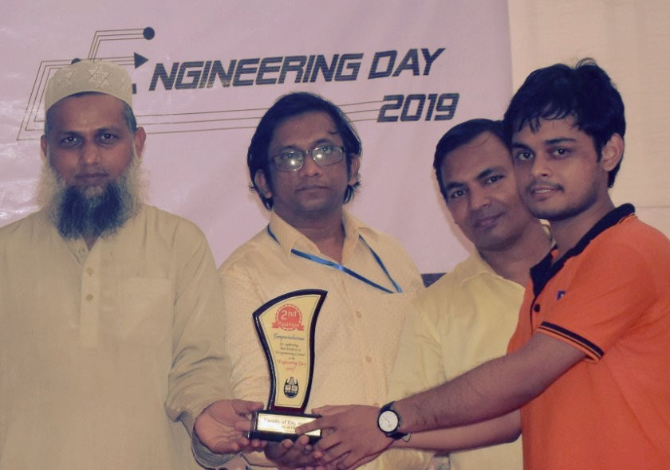

Anik Dey Shaon
A Journey of Achievements and Aspirations
Personal Information
Date of Birth: 30 May, 1995
Height: 5'3"
Address: Baroigram, Barlekha, Moulvibazar, Bangladesh
Academic Qualifications
- S.S.C: 2012, P.C High School
- H.S.C: 2014, Barlekha Degree College
- B.Sc. (Engg.): 2020, Computer Science & Engineering, University of Chittagong
- IELTS: Overall 8.0 (No band less than 7.0)
- Upcoming: Will appear in 44th BCS Viva
Achievements

Champion, Secondary Category, Sylhet Division, Bangladesh Mathematical Olympiad, 2012

1st Runner-Up, Higher Secondary Category, Sylhet Division, Bangladesh Mathematical Olympiad, 2013

2nd Runner-Up, EDU Engineering Day Programming Contest, 2018

Runner-Up, CU Engineering Day Programming Contest, 2019

Champion, Chittagong Division, National Collegiate Programming Contest (NCPC), 2018
Family
Father: Ajit Kumar Dey (Businessman)
Mother: Swapna Rani Datta (Housewife)
Siblings:
- Choiti Dey Shakhi - Completed B.Sc. in Mathematics, MC College
- Anirdan Dey Sagor - 2nd Year, B.Sc. in Statistics, MC College
Notable Relatives:
- Polash Ranjan Dey (Cousin) - Additional Police Super, Bangladesh Police
- Aditi Dey Tithi (Cousin) - Assistant Researcher, Rensselaer Polytechnic Institute, New York, USA
Hobbies and Interests
I enjoy engaging my mind with strategic challenges and expanding my knowledge through literature. My key hobbies include:
- Playing Chess: I love the thrill of competition and the mental exercise it provides.
- Reading Books: From fiction to technical reads, I find joy in exploring new ideas and stories.